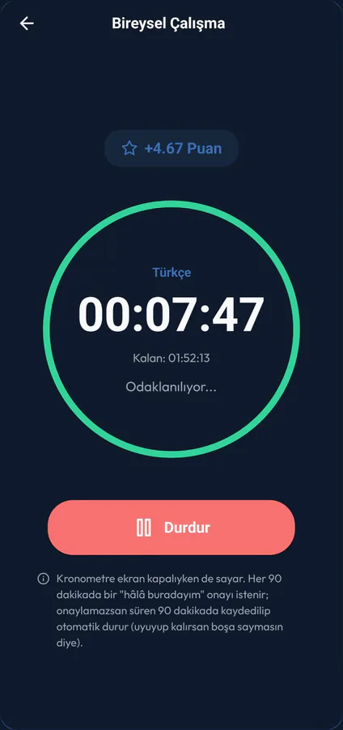
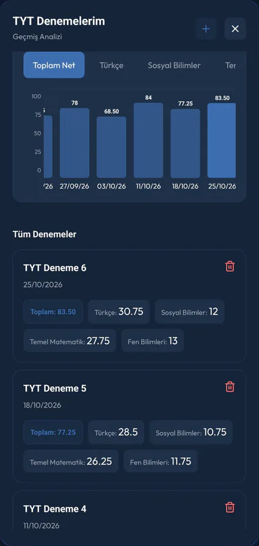
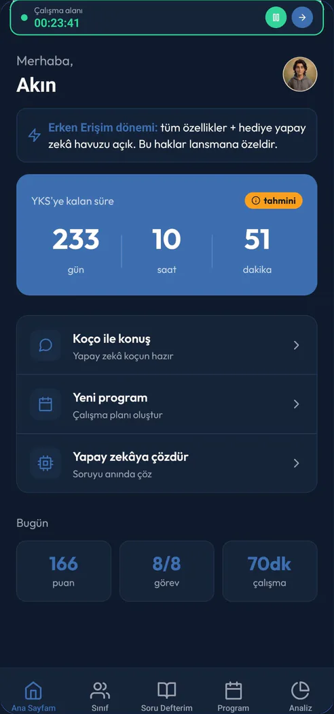
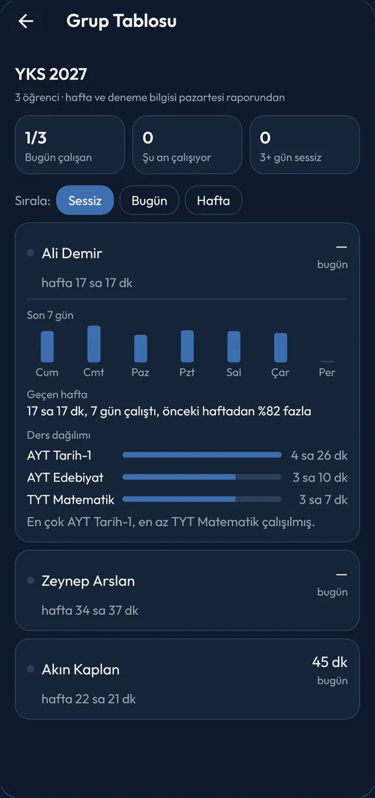
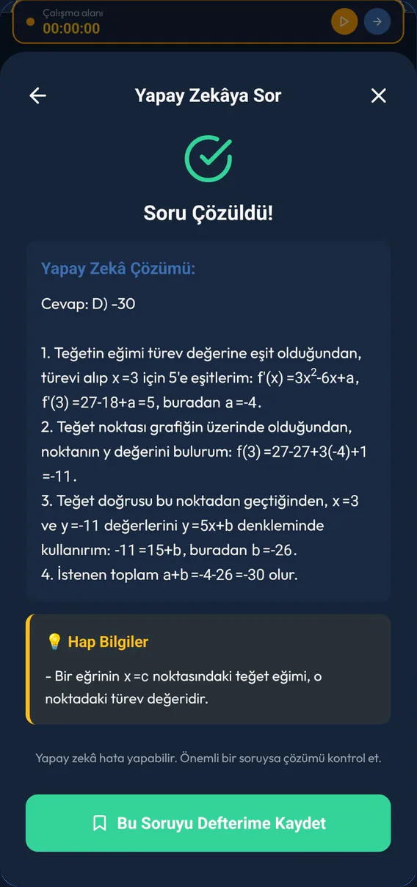

Öğrenciysen hesap açmadan 7 gün deneyebilirsin. Erken erişim dönemindeyiz: Pro özellikleri ücretsiz, 30 yapay zekâ hakkı hediye.
YKSLGSMSÜKPSSDGSALES



Aynı uygulama, üç ayrı ekran.
Öğrenci çalışır, veli ve öğretmen gerçek verilerle takip eder. Herkes yalnızca kendi işine yarayan ekranı görür.
Öğrenci
Her gün ne çalışacağını bil.
YKS ve LGS'de sınavını ve haftalık süreni seç, programın hazır; yetişmeyen görev kaybolmaz, sonraki günlere kayar.
Kronometre süreyi tutar; çalışma puana, puan aylık lige dönüşür.
Yanlış yaptığın sorular 1, 3 ve 7 gün sonra tekrar önüne gelir.
Takıldığın sorunun fotoğrafını çek, adım adım çözümü al.
Veli
Sormadan gör.
Bugünkü ve haftalık çalışma süresi tek ekranda; her ay özet bildirimi gelir.
Öğrenci 3 gün çalışmazsa bildirim alırsın.
Günde bir hazır destek notu gönderebilirsin.
Davet kodunu çocuğuna ver, o girip onaylasın. Takip ücretsiz; mesajları ve koç sohbetleri sana görünmez.
Öğretmen
Tüm öğrencilerin tek ekranda.
Davet kodunu öğrencine ver, o girip onaylasın. 60 öğrenciye kadar ücretsiz.
Grup kodunu paylaş, öğrencilerin katılsın; programı gruba tek seferde ata.
Grup tablosunda kim bugün çalıştı, kim kaç gündür sessiz, tek bakışta gör.
Deneme netlerini ve ders bazlı çalışma dağılımını izle; düzenli rapor al.
Kısa not bırak; öğrenci hazır cevapla yanıtlar, velisi de görür.
Kimin işine yarar?
Öğrenciden okula, Dirayz'ı kimin nasıl kullandığı.
Hangi öğrencilerin işine yarar?
YKS, LGS, KPSS, MSÜ, DGS ve ALES'e hazırlanan her öğrencinin. Lisede okuyor, mezun ya da açıktan okuyor olman fark etmez; uygulama herkese aynı şekilde çalışır.
Sınavına göre ayar: YKS'de alanını (Sayısal, Eşit Ağırlık, Sözel, Dil ya da yalnız TYT), KPSS'de öğrenim düzeyini (lisans, ön lisans, ortaöğretim), ALES'te oturumunu seçersin.
Hazır program: altı sınavda da "Hızlı başla" ile sınavını, çalışacağın günleri ve haftalık süreni seçersin; dersler, tekrar testleri ve denemeler tek programda hazır. İzlediğin YouTube oynatma listesini eklersen videolar konulara yerleşir.
Haftalık program: gün gün kendi programını da yazabilirsin; koçunun ya da öğretmeninin gönderdiği programla birlikte tek takvimde görünür. Koçunun programı eklenince hazır programın ona göre düzenlenir; sen onaylamadan hiçbir şey değişmez.
Her sınavda: kronometre, aylık lig, çalışma sınıfları, 1-3-7 tekrarlı soru defteri, deneme kaydı ve net takibi, yapay zekâ koç ve fotoğraftan soru çözümü.
Deneme takibi: YKS'de tahmini puan ve sıralama, LGS'de tahmini yüzdelik dilim; KPSS, MSÜ, DGS ve ALES'te netin hesaplanır. Bu sınavlarda puan, sınavdan sonra bütün adaylara göre belirlendiği için tahmin yapılmaz.
Etüt: öğrencilerin birbirine soru sorduğu pano; 15 yaş ve üstü öğrencilere açık, LGS'de kapalı.
Başlamak: 13 yaş ve üstü herkes kayıt olabilir. Hesap açmadan 7 gün deneyebilirsin; lig, sınıflar, Etüt, yapay zekâ ve veli ya da öğretmen bağlantısı için hesap gerekir.
Velilere ne kazandırır?
Çocuğuna sormadan nasıl çalıştığını görürsün; o da neyin paylaşıldığını bilerek onay verir.
Gördüklerin: bugünkü ve haftalık çalışma süresi, şu an çalışıp çalışmadığı, kaç gündür çalışmadığı, en çok çalıştığı dersler, kronometre kayıtları, puanı ve lig sırası, paylaştığı programlardaki ilerlemesi, deneme netlerinin gidişi ve öğretmeninin yazdığı notlar.
Bildirimler: çocuğun 3 gün çalışmazsa haber alırsın, sonra 7 günde bir hatırlatma gelir. Her ayın başında çalışma süresi, aktif gün sayısı ve program ilerlemesiyle aylık özet bildirimi gelir. Raporlar e-postayla değil, uygulama bildirimiyle gelir.
Destek: günde bir kez hazır listeden kısa bir destek tepkisi gönderebilirsin (aferin, yanındayım gibi). Serbest mesaj yazılmaz.
Görmediklerin: yapay zekâ sohbetleri, soru defteri, Etüt mesajları, hangi sınıfta olduğu ve paylaşmadığı programlarının içeriği.
Bağlantı: uygulamadaki 6 karakterlik kodunu çocuğuna verirsin; çocuğun kodu girer, neyi göreceğini görür ve onaylar. Bağlantıyı istediği an kaldırabilir.
Ücret: veli hesabı ücretsiz, 10 öğrenciye kadar; çocuğunun abonelik alması gerekmez.
Öğretmenlere, koçlara ve özel öğretmenlere ne sunar?
Okul öğretmeni, koç ve özel öğretmen aynı "Öğretmen / Koç" hesabını kullanır; 60 öğrenciye kadar ücretsiz.
Öğrenci ekleme: kişisel kodunu ya da bir grubun kodunu verirsin; öğrenci kodu girip onaylar. En çok 30 grup kurabilir, her grubun boyutunu belirleyebilirsin.
Grup tablosu: bugün kim çalıştı, kim şu an çalışıyor, kim 3 gündür ya da daha uzun süredir sessiz; her öğrencide haftalık süre, program ilerlemesi ve son deneme neti; açınca 7 günlük grafik ve ders dağılımı.
Program atama: gün gün haftalık program yazarak ya da kitap, konu, test ve YouTube oynatma listesiyle program kurup bir ya da birçok öğrenciye (en çok 300) gönderirsin. Değişiklik hepsine uygulanır, yapılmış görevler korunur; her öğrencinin tamamlanma yüzdesini görürsün.
Not ve destek: öğrenci başına günde en fazla 3 kısa not (200 karakter) yazarsın; öğrenci hazır cevapla yanıtlar, velisi de görür. Hazır destek tepkilerini öğrencilerine toplu da gönderebilirsin.
Deneme takibi: öğrencinin deneme listesi ve toplam netinin gidişi (son 8 deneme).
Görmediklerin: yapay zekâ sohbetleri, soru defteri, Etüt mesajları ve öğrencinin kendi kurduğu programların içeriği. Senin atadığın programı ise ayrıntısıyla görürsün.
Okul rehberlik servisleri ve kurumlar nasıl kullanır?
Ayrı bir kurum paneli yok; rehber öğretmen ya da her öğretmen kendi "Öğretmen / Koç" hesabıyla kullanır.
Nasıl: grup oluşturup grup kodunu öğrencilere verirsin; öğrenciler onaylayarak katılır. Sonra grup tablosundan takip eder, program atar, not bırakırsın.
Kapasite: bir öğretmen 60 öğrenciye kadar ücretsiz takip eder; aynı öğrenciyi birden çok öğretmen ayrı ayrı takip edebilir. Daha fazla öğrenci için kurum lisansı: destek@dirayz.com.
Onay öğrencide: okul adına toplu hesap açılmaz; her öğrenci bağlantıyı kendisi onaylar ve istediği an kaldırabilir.
Takip tahmine kalmaz.
Öğrenci evde çalışıyor mu, bilinmiyor.
Her çalışma dakikası kayda geçer; veli ve öğretmen tek ekranda görür.
Çalışmayı bırakan öğrenci geç fark ediliyor.
3 gün çalışmayan öğrenci için otomatik bildirim gider.
Gelişim somut olarak ölçülemiyor.
Deneme sonuçları ve program ilerlemesi düzenli raporlarla izlenir.
Öğretmen her soruya yetişemiyor.
Öğrencinin takıldığı soru, yapay zekâyla adım adım çözülür.

Çalışmak alışkanlık olur.
Disiplin bir seferlik karar değil, her gün yeniden kurulan bir düzen. Dirayz bu düzeni dört parçayla kurar.
Günlük program
Her gün ne çalışılacağı belli. Yapılmayan görev kaybolmaz, sonraki günlere aktarılır.
Ölçülen emek
Çalışma süresi puana dönüşür; aylık lig öğrenciyi motive eder.
Hatırlatmalar
Belirlenen saatte bildirim gelir, çalışma rutini korunur.
Yanlışlara dönüş
Yanlış yapılan sorular 1, 3 ve 7 gün sonra yeniden önüne gelir.
Sınav hazırlığının tamamı tek uygulamada.
Kronometreden deneme takibine, soru defterinden yapay zekâ koça; dağınık araçlar yerine tek bir düzen.
Kronometre
Ders ders süre tutar, ekran kapalıyken de sayar. İnternet kesilse ya da uygulama kapansa da süren kaybolmaz.
Çalışma programı
Sınavını ve haftalık süreni seç; dersler, tekrarlar ve denemeler altı sınavda da tek programda hazır. İstersen YouTube kamp listeni ekle, videolar konulara yerleşsin; ya da gün gün kendi haftalık programını yaz. Koçunun gönderdiği programla birlikte tek takvimde.
Soru Defteri
Yanlışlarını fotoğrafla ya da yaz; 1, 3 ve 7 gün sonra tekrar çöz. Fotoğraflar hesabında saklanır, telefon değişse de kaybolmaz.
Deneme takibi
Ders bazlı net grafiği; YKS ve LGS'de tahmini puan ve sıralama.
Yapay zekâ koç
Plan ve motivasyon desteği; her gün çalışmanın kısa özeti.
Fotoğraftan çözüm
Sorunun fotoğrafını çek; adım adım çözüm ve hap bilgiler gelsin.
Sınıflar ve Etüt
Arkadaşlarınla canlı çalışma odası kur; takıldığın soruyu Etüt'te sor, birlikte çözün (Etüt 15 yaş ve üstü için, LGS hariç).
Hatırlatmalar ve lig
Çalışma saatinde bildirim; her ay sıfırlanan ligde sıralamanı gör.

Takıldığı yerde yalnız kalmaz.
Öğretmen her soruya yetişemeyebilir; yapay zekâ bu açığı kapatır. Öğrenci sorunun fotoğrafını çeker, adım adım çözümü ve hatırlaması gereken bilgileri alır. Koç ise planı ve motivasyonu konuşur.
Fotoğraftan ya da metinden soru çözümü, dersine göre
Çözülen soru tek dokunuşla Soru Defteri'ne kaydedilir
Kesirler, kökler ve üsler çözümde kitaptaki gibi görünür
Koç, öğrencinin günlük çalışma özetini bilir; ona göre konuşur
Güvenli kullanım
18 yaşından küçükler yapay zekâyı yalnızca veli onayıyla kullanır.
Gönderilen veriler yalnızca yanıt üretilirken iletilir; model eğitiminde kullanılmaz.
Kendine zarar gibi risk işaretleri içeren mesajlarda öğrenciye destek hatları gösterilir.
Baskı yok, düzen var.
Takip, öğrencinin iznine ve mahremiyetine saygı duyarak çalışır. Amaç gözetlemek değil, ailenin ve öğretmenin süreci gerçek verilerle görebilmesi.
Veli ya da öğretmen bir öğrenciyi ancak öğrenci onay verirse takip edebilir; bağlantı istendiği an kaldırılır.
Takip eden kişi çalışma verilerini görür; öğrencinin yapay zekâyla sohbetleri, Soru Defteri ve mesajları ona özel kalır.
Bildirimler suçlamaz, moral bozmaz; yalnızca durumu bildirir.
Her özelliği çocukların güvenliğini gözeterek tasarlıyoruz. Uygulamada reklam yok; verilerin satılmaz.
Neyin görünüp neyin görünmediği Gizlilik Politikası'nda madde madde yazıyor.
Üzerinde çalıştıklarımız.
Dirayz erken erişimde ve gelişmeye devam ediyor.
Deneme analizi. Netlerine göre kısa yorumlar: en çok düşen ve yükselen ders, son denemelerin ortalaması, hedefe uzaklık.
Daha sade ekranlar. Öğrenci, veli ve öğretmen ekranlarında daha az yazı, daha az adım.
Erken erişimde, herkese açık.
Dirayz App Store ve Google Play'de yayında. Öğrenciysen hesap açmadan 7 gün deneyebilirsin; sonra Google, e-posta ya da iPhone'da Apple ile hesabını açarsın, verilerin kalır. Erken erişim döneminde Pro özellikleri ücretsiz, 30 yapay zekâ hakkı hediye. Dönemin kesin bir bitiş tarihi yok; bitmeden önce uygulama içinden duyururuz. Kurucu üye kontenjanı 12 Ekim 2026'da doldu. Kurucu üyelere ödemeler açıldığında 6 ay ücretsiz Pro tanımlanır. Kontenjan dolduktan sonra katılan hesaplara kurucu hakları uygulanmaz.
Dirayz'ı, sınav sürecinin dağınıklığını ve motivasyon zorluğunu bizzat yaşamış iki kurucu geliştirdi: Ela Ensari ve Mehmet Nurullah Tek. Amacımız basit: öğrencilerin onlarca farklı araç yerine tek bir yerde disiplinli çalışabileceği, birbirini motive eden bir alan sunmak.
Kronometre ve çalışma istatistiklerinden çalışma programına, soru defterinden deneme takibine, sınıflardan lige kadar her özelliği bu hedefle tasarlıyoruz.
Denetmen sistemi bizim için özellikle önemli. Bir öğrenci, velisini veya öğretmenini "denetmen" olarak ekleyebilir; denetmen o öğrencinin çalışma süresini, paylaştığı programlardaki ilerlemesini ve deneme sonuçlarını görür; öğretmen ya da koç olarak bağlıysa öğrenciye çalışma programı da atayabilir. Bağlantı yalnız öğrenci onayladığında kurulur, istediği an kaldırılabilir ve denetmenin göremeyeceği alanlar açıkça bellidir. Amaç gözetlemek değil, ailenin ve öğretmenin süreci gerçek verilerle takip edebilmesi.
Hangi sınavlara hazırlananlar kullanabilir?
Dirayz altı sınavı destekler: YKS, LGS, MSÜ, KPSS, DGS ve ALES. KPSS'de öğrenim düzeyini, ALES'te oturumu, YKS'de alanını seçersin; uygulama buna göre çalışır.
Sınav tarihleri hakkında. Uygulamadaki geri sayım, ÖSYM ve MEB'in resmî takvimine dayanır. Yeni yılın takvimi henüz yayımlanmamışsa geri sayımın yanında "tahmini" etiketi görürsün; o tarih geçmiş yılların düzeninden çıkarılmış bir tahmindir, kesin değildir. Resmî takvim açıklandığında uygulamadaki tarih güncellenir ve etiket kalkar. Başvuru ve sınav günü için her zaman ÖSYM/MEB duyurusunu esas al.
Görüş ve önerileriniz için: destek@dirayz.com
Dirayz Gizlilik Politikası
Son güncelleme: 29.10.2026
Bu Gizlilik Politikası, Dirayz mobil uygulamasını ("Uygulama", "Dirayz") kullandığınızda kişisel verilerinizin nasıl toplandığını, kullanıldığını, saklandığını ve korunduğunu açıklar. Dirayz'ı kullanarak bu politikada açıklanan uygulamaları kabul etmiş olursunuz.
Kişisel verileriniz 6698 sayılı Kişisel Verilerin Korunması Kanunu ("KVKK") ve ilgili mevzuat hükümlerine uygun olarak işlenmektedir. KVKK kapsamındaki haklarınız için bu sayfadaki "KVKK Aydınlatma" sekmesini de inceleyiniz; iki metin birlikte okunmalıdır.
1. Topladığımız veriler
1.1. Hesap ve profil bilgileri
E-posta adresi (kayıtta doğrulanır ya da Google/Apple ile girişte bu hizmetlerden doğrulanmış gelir; Apple ile girişte Apple'ın gizli aktarma adresi olabilir). Hesapsız (misafir) kullanımda e-posta alınmaz.
Ad ve soyad (soyad isteğe bağlıdır ve kayıtta sorulmaz; Apple veya Google ile girişte ad bu hizmetlerden gelebilir)
Doğum tarihi (yalnızca öğrencilerden; hesapsız kullanımda yalnızca telefonunuzda tutulur, hesap açtığınızda hesabınıza kaydedilir)
Cinsiyet (isteğe bağlı; kayıtta sorulmaz)
Yaşadığınız şehir (isteğe bağlı)
Hazırlandığınız sınav ve varsa düzeyi/oturumu (örneğin KPSS Lisans, ALES 2. Oturum)
Hedef okul, kurum veya bölüm bilgisi (isteğe bağlı)
Kendinizi tanıttığınız kısa metin (isteğe bağlı)
Android'de, yeni telefona geçtiğinizde oturumunuzun kendiliğinden gelmesi için cihazınızda oluşturulan geri yükleme anahtarının herkese açık yarısı (hesabınıza bağlıdır; gizli yarısı cihazınızdan çıkmaz, Google'ın uçtan uca şifreli cihaz yedeğiyle taşınır). Yalnızca giriş yapmış hesaplarda oluşturulur; misafir kullanımda oluşturulmaz, çıkış yaptığınızda silinir.
1.2. Kullanım ve çalışma verileri
Çalışma süreleri ve kronometre kayıtları
Yapay zekâ koç ile yapılan sohbet geçmişi
Soru defterine kaydettiğiniz sorular, çözümler ve 1-3-7 tekrar takvimi
Deneme sınavı sonuçları ve net grafikleri
Oluşturduğunuz ya da öğretmeninizin size gönderdiği çalışma programları, programa eklediğiniz YouTube oynatma listesi bağlantıları ve ek programlara ilişkin tercihleriniz
Sınıf ve çalışma odası etkinlikleriniz
Etüt panosuna gönderdiğiniz mesajlar ve fotoğraflar
Abonelik durumunuz, ücretsiz deneme kaydınız ve yapay zekâ kredi bakiyeniz
Uygulama doğrulama bilgisi (Firebase App Check): uygulamanın değiştirilmemiş bir sürüm olduğunu doğrulamak için
Dirayz; T.C. kimlik numarası, adres, telefon numarası, banka veya kart bilgisi gibi verileri toplamaz. Ödemeler tamamen uygulama mağazasının (Android'de Google Play, iPhone/iPad'de Apple App Store) altyapısı üzerinden yürütülür ve kart bilgilerinize erişimimiz yoktur.
2. Fotoğraflar nerede saklanıyor?
İki farklı durum var; ikisini de açıkça belirtiyoruz.
Soru Defteri fotoğrafları — hesabınızla birlikte saklanır. Soru Defteri'ne eklediğiniz fotoğraflar önce telefonunuza kaydedilir, ardından hesabınıza bağlı olarak Google Firebase Storage üzerinde saklanır; böylece telefon değiştirdiğinizde de yeni cihazınızda görünür. Fotoğraflarınızı yalnızca siz görürsünüz; denetmenleriniz ve diğer kullanıcılar göremez. Yeni bir cihaza indirme, yalnızca size verilen ve 15 dakika geçerli bir bağlantıyla yapılır. Soruyu sildiğinizde fotoğrafı, hesabınızı sildiğinizde bütün fotoğraflarınız silinir.
Etüt panosu fotoğrafları — sunucuda saklanır. Etüt panosuna gönderdiğiniz fotoğraflar Google Firebase Storage üzerinde tutulur ve panoyu gören diğer öğrenciler tarafından görülebilir. Bu fotoğraflar gönderilmeden önce otomatik içerik denetiminden (Google Cloud Vision) geçirilir. Etüt mesajları ve fotoğrafları 15 gün sonra otomatik olarak silinir.
Yapay zekâya çözdürme. Bir soruyu çözdürdüğünüzde sorunun fotoğrafı ya da metni ve ders adı, yalnızca çözümün üretilmesi amacıyla OpenAI'a (OpenAI, L.L.C., ABD) iletilir; Soru Defteri'ne kaydetmediğiniz sürece tarafımızca saklanmaz. OpenAI bu verileri model eğitiminde kullanmaz; yalnızca kötüye kullanımı denetlemek için en fazla 30 gün tutabilir. Bu aktarım, uygulama içinde açık izninizi verdikten sonra yapılır (bkz. 6. bölüm).
3. Verileri kullanma amaçlarımız
Hesabınızı oluşturmak ve yönetmek
Kişiselleştirilmiş çalışma deneyimi sunmak (yapay zekâ koç, program, analiz)
Çalışma istatistiklerinizi ve gelişiminizi göstermek
Sınıf, çalışma odası ve lig özelliklerini sağlamak
İçerik güvenliğini sağlamak ve kötüye kullanımı önlemek
Uygulamayı geliştirmek ve teknik sorunları gidermek
Bildirim göndermek (izin verdiyseniz)
Yasal yükümlülüklerimizi yerine getirmek
Verilerinizi reklam amacıyla satmayız ve üçüncü taraflara pazarlama amacıyla devretmeyiz. Uygulamada reklam gösterilmez.
4. Üçüncü taraf hizmetler
Google Firebase (Google LLC): Kimlik doğrulama, veritabanı, dosya depolama (Soru Defteri ve Etüt fotoğrafları)
Google ile giriş (Google LLC) ve Apple ile giriş (Apple Inc.): Bu yöntemlerle giriş yapmayı seçerseniz kimliğinizin doğrulanması (Apple ile giriş Android'de de sunulur; Apple'ın giriş sayfası tarayıcıda açılır)
OpenAI (OpenAI, L.L.C., ABD): Yapay zekâ koç ve soru çözme özelliği; programa eklenen YouTube video başlıklarının konulara eşleştirilmesi
Google Cloud Vision (Google LLC): Etüt panosuna gönderilen fotoğrafların otomatik içerik denetimi
YouTube API Hizmetleri (Google LLC): Programa eklediğiniz herkese açık oynatma listelerindeki video başlıklarının ve sürelerinin alınması
Firebase App Check (Google LLC), Google Play Integrity (Android) ve Apple App Attest (iPhone/iPad): Uygulamanın ve cihazın gerçek ve değiştirilmemiş olduğunun doğrulanması
Android Credential Manager ve cihaz yedeği (Google LLC): Android'de Google ile giriş penceresi ve yeni telefona geçişte geri yükleme anahtarının uçtan uca şifreli cihaz yedeğiyle taşınması. Anahtarın gizli yarısını Google okuyamaz.
Sentry (Functional Software, Inc., ABD; veriler AB'de, Almanya'da tutulur): Uygulama hatalarının (çökme raporları) toplanması
Google Play (Google LLC), Apple App Store (Apple Inc.) ve RevenueCat, Inc.: Ödemeler açıldığında abonelik ve kredi satın alımlarının işlenmesi ve doğrulanması (şu anda uygulamada satın alma yoktur)
Bu hizmetlere yalnızca ilgili özelliğin çalışması için gerekli veriler aktarılır.
YouTube API Hizmetleri. Dirayz, programa eklediğiniz oynatma listelerinin video bilgilerini almak için YouTube API Hizmetlerini kullanır. Bu özelliği kullanarak YouTube Hizmet Şartları'nı kabul etmiş olursunuz; Google'ın verileri nasıl işlediği Google Gizlilik Politikası'nda açıklanır. Dirayz YouTube hesabınıza erişmez; yalnızca herkese açık listelerin bilgilerini okur, videolar YouTube uygulamasında ya da tarayıcıda açılır.
Ödemeler: Abonelik ve kredi satın almaları App Store ya da Google Play üzerinden yapılır; kart bilgilerinizi Dirayz görmez. Satın alma durumunu yönetmek için RevenueCat (ABD) hizmetini veri işleyen olarak kullanırız; RevenueCat'e yalnız Dirayz hesap kimliğiniz (rastgele bir kimlik; ad ya da e-posta değil) ve satın alma geçmişiniz iletilir. Hesabınız silindiğinde RevenueCat'teki kaydınız da silinir.
4.1. Yurt dışına veri aktarımı ve açık rıza
Önemli: Yukarıda sayılan hizmet sağlayıcıların sunucuları yurt dışında bulunmaktadır. Dirayz'ı kullanabilmeniz için kişisel verilerinizin bu sunuculara aktarılması teknik olarak zorunludur; bu aktarım olmadan hesap oluşturma, veri saklama, bildirim gönderme ve yapay zekâ özellikleri çalışamaz.
Aktarılan veriler ve gerekçeleri:
Google Firebase — hesap bilgileriniz, çalışma verileriniz, Soru Defteri ve Etüt fotoğraflarınız. Hizmetin temelini oluşturur.
Google ile giriş / Apple ile giriş — yalnızca bu yöntemle giriş yaparsanız: e-posta adresiniz ve oturum kimliğiniz. Şifrenizi biz görmeyiz.
OpenAI (ABD) — yalnızca yapay zekâ koç ve soru çözdürme özelliklerini kullandığınızda ve uygulama içinde bunun için ayrıca açık izin verdikten sonra: koça yazdığınız mesajlar, sohbet geçmişi ve özeti; koçun size uygun yanıt verebilmesi için adınız, sınav türünüz ve alanınız, sınıf/not açıklamanız, şehriniz, hedef okul ve bölümünüz, koça verdiğiniz ad ve kişilik tarifi; çalışma özetiniz (bugünkü ve haftalık çalışma süreniz, program ilerlemeniz, deneme netleriniz); sınavınızla ilgili notunuz; çözdürdüğünüz sorunun fotoğrafı ya da metni ve ders adı. Koç yanıt veremediğinde mesajınız ayrıca kendine zarar riski açısından OpenAI'ın içerik denetimi hizmetinden geçirilir. Yalnızca yanıt üretilirken iletilir ve model eğitiminde kullanılmaz; OpenAI yalnızca kötüye kullanımı denetlemek için en fazla 30 gün tutabilir. 18 yaşından küçük kullanıcılar bu izni yalnızca veli/vasi onayını uygulama içinde beyan ederek verebilir. Ayrıca programa YouTube oynatma listesi eklediğinizde listedeki herkese açık video başlıkları, konulara eşleştirilmesi için OpenAI'a gönderilir; bu gönderimde sizinle ilgili hiçbir bilgi (ad, hesap, çalışma verisi) yer almaz. Hesapsız (misafir) kullanımda bu eşleştirme yapay zekâ kullanılmadan yapılır.
YouTube API Hizmetleri — yalnızca programa oynatma listesi eklediğinizde listenin kimliği; video başlıklarını ve sürelerini almak için. Hakkınızda bilgi gönderilmez.
Google Cloud Vision — yalnızca Etüt panosuna gönderilen fotoğraflar, otomatik içerik denetimi için.
Firebase App Check / Google Play Integrity / Apple App Attest — uygulamanın ve cihazın doğrulanması için gereken teknik bilgi; kötüye kullanımı önlemek için. Hesap ve çalışma verileriniz gönderilmez.
Sentry (veriler AB'de, Almanya'da tutulur) — yalnızca uygulama bir hatayla karşılaştığında: cihaz modeli, işletim sistemi ve uygulama sürümü ile hatanın teknik ayrıntıları. Hatayı bulup düzeltmek için kullanılır.
Expo — bildirim gönderilebilmesi için cihazınıza ait anonim bildirim adresi (push token).
Railway — Dirayz sunucusu bu altyapıda çalışır; uygulamanın sunucuya gönderdiği istekler burada işlenir.
Google Play / Apple App Store / RevenueCat — ödemeler açıldığında: anonim kullanıcı tanımlayıcısı ve satın alma durumu bilgisi. Ödeme aracı bilgileriniz (kart numarası vb.) ne tarafımızca ne de RevenueCat tarafından görülür; ödemeler tamamen ilgili mağaza tarafından işlenir. Ayrıntı: revenuecat.com/privacy
Uygulamaya kayıt olarak ve kullanmaya devam ederek, kişisel verilerinizin yukarıda belirtilen amaçlarla ve sınırlı kapsamda yurt dışına aktarılmasına KVKK'nın 9. maddesi uyarınca açık rıza vermiş olursunuz. Bu rızanızı geri çekmek isterseniz hesabınızı silebilir veya destek@dirayz.com adresinden bize ulaşabilirsiniz; ancak rızanın geri çekilmesi hâlinde hizmeti sunmamız teknik olarak mümkün olmayacaktır.
5. Denetmen sistemi ve görünürlük
Bir veli veya öğretmeni "denetmen" olarak kabul ederseniz, o kişi hesabınızla ilgili sınırlı bilgilere erişir. Ne gördüğü ve ne görmediği aşağıda açıkça belirtilmiştir.
Denetmenin gördükleri:
Kronometre kayıtlarınız ve ders bazlı çalışma dağılımınız
Denetmenle paylaşmayı seçtiğiniz programlardaki ilerlemeniz (program adı ve tamamlanma oranı). Kendi oluşturduğunuz programlar varsayılan olarak paylaşılmaz; program menüsünden açabilirsiniz. Öğretmen/koç olarak bağlı denetmenin size atadığı programı ve ilerlemenizi o denetmen görür.
Deneme sınavı sonuçlarınız ve net grafikleriniz
Haftalık özet (haftalık çalışma süresi, çalışılan gün sayısı, en çok çalışılan dersler, program ilerlemesi) ve her ay gönderilen özet bildirimi
Toplam puanınız ve lig sıralamanız (bunlar herkese açık profilinizde de görünür)
Öğretmenlerinizin size yazdığı notlar ve verdiğiniz hazır cevaplar
Denetmenin görmedikleri:
Paylaşmadığınız programlarınızın içeriği ve ilerlemesi (hangi gün hangi konuyu çalışacağınız)
Soru defteriniz ve içindeki sorular
Hangi sınıfta olduğunuz veya sınıf etkinlikleriniz
Etüt panosundaki mesajlarınız
Yapay zekâ koç sohbetleriniz
Denetmen bağlantısı yalnızca siz onayladığınızda kurulur ve istediğiniz an uygulama içinden kaldırılabilir. Denetmen eklemek zorunlu değildir.
Davet kodu ve grup kodu. Bağlantıyı kurmanın bir yolu da velinizin ya da öğretmeninizin size verdiği 6 karakterlik koddur. Kodu girdiğinizde kimin, hangi bağla (veli ya da öğretmen/koç) bağlanacağı ve neleri göreceği gösterilir; bağlantı ancak siz onaylarsanız kurulur. Öğretmeninizin grup koduyla katılırsanız grubun adını görürsünüz; öğretmeniniz de sizi o grupta görür.
Öğretmen notları. Öğretmen/koç bağıyla bağlı denetmeniniz size kısa notlar yazabilir (en fazla 200 karakter, günde en fazla 3). Notlar otomatik içerik denetiminden geçer ve diğer denetmenleriniz (örneğin veliniz) tarafından da görülebilir. Notlara yalnızca hazır cevaplarla yanıt verebilirsiniz. Uygunsuz bulduğunuz bir notu bildirebilirsiniz; bildirilen notlar incelenir. Bağlantıyı kaldırdığınızda o kişi size yeni not yazamaz.
Destek tepkileri. Bağlı denetmenleriniz (veli ya da öğretmen) size hazır bir listeden kısa destek tepkileri gönderebilir (öğrenci başına günde bir). Serbest mesaj yazılamaz; tepkileri okuyup silebilirsiniz.
Herkese açık profil. Ad-soyadınız, avatarınız, puanınız ve lig sıralamanız uygulamayı kullanan diğer öğrenciler tarafından görülebilir. Bunlar lig ve sınıf özelliklerinin çalışması için gereken asgari bilgilerdir.
Varsayılan olarak korumalı.Doğum tarihiniz, yaşadığınız şehir ve hedef okulunuz profilinizde varsayılan olarak GİZLİDİR. Bu üç bilgi bir araya geldiğinde kişiyi tarif etmeye yetecek kadar daraltıcı olduğu için, siz açıkça açmadıkça kimseye gösterilmez.
Bu alanları görünür yapmak tamamen sizin tercihinizdir: Profil → Profili Düzenle → Görünürlük Ayarları bölümünden tek tek açıp kapatabilir, açtığınız bir alanı istediğiniz an tekrar gizleyebilirsiniz. Cinsiyet, sınav türü ve çalışma geçmişi gibi diğer alanların görünürlüğü de aynı ekrandan yönetilir.
6. Yapay zekâ özellikleri hakkında
Kişisel verileriniz yapay zekâya yalnızca iki yerde gönderilir: koç sohbeti ve soru çözdürme. Bunların dışında hiçbir ekranda hiçbir veriniz yapay zekâya gönderilmez. Programa YouTube oynatma listesi eklediğinizde yalnızca listedeki herkese açık video başlıkları, konulara eşleştirilmek üzere yapay zekâyla işlenir; bu işlemde sizinle ilgili bilgi yoktur ve ayrıca izin istenmez.
Bu iki özellik OpenAI (OpenAI, L.L.C., ABD) teknolojisini kullanır. Bu özellikleri kullandığınızda gönderdiğiniz mesajlar ve sorular ile koçun size uygun yanıt verebilmesi için profil bilgilerinizin bir kısmı ve çalışma özetiniz işlenmek üzere OpenAI'ın ABD'deki sunucularına iletilir; gönderilen bilgiler 4.1. bölümde tek tek sayılmıştır. Veriler yalnızca yanıt üretilirken kullanılır ve model eğitiminde kullanılmaz; OpenAI yalnızca kötüye kullanımı denetlemek için en fazla 30 gün tutabilir. Yapay zekâ tarafından verilen yanıtlar bilgilendirme amaçlıdır ve her zaman doğru olmayabilir; önemli kararlar için öğretmenlerinize danışmanızı öneririz.
Koç ve soru çözdürme sohbetleriniz yalnızca Dirayz sunucusu üzerinden OpenAI'a iletilir; Google, Apple ya da telefonunuzdaki başka bir yapay zekâ asistanıyla paylaşılmaz, bu hesaplara yazılmaz.
Önce izniniz alınır. Bu iki özelliği ilk kullanışınızdan önce uygulama, hangi bilgilerin OpenAI'a gönderileceğini gösterir ve açık izninizi ister. 18 yaşından küçükseniz izin penceresinde velinizin/vasinizin bu izinden haberdar olduğunu ve onayladığını beyan eden kutucuğu işaretlemeniz zorunludur; işaretlenmezse yapay zekâ özellikleri açılmaz. İzin vermezseniz hiçbir bilgi gönderilmez; bu iki özellik çalışmaz, uygulamanın geri kalanı etkilenmez. Verdiğiniz izni istediğiniz zaman Profil → Ayarlar → Daha Fazlası → Yapay zekâ izni bölümünden geri alabilirsiniz; bir sonraki kullanımda izin yeniden sorulur.
Yapay zekâ koç ile yaptığınız sohbet geçmişi, size kesintisiz hizmet sunabilmek için hesabınıza bağlı olarak saklanır.
Yapay zekâ özelliklerinin maliyetini izlemek için yalnız günlük toplam istek ve kelime (token) sayıları tutulur; bu sayılar kimliğinizle ilişkilendirilmez.
7. 18 yaşından küçük kullanıcılar
Dirayz, ortaokul ve lise öğrencileri de dâhil olmak üzere sınava hazırlanan herkese yönelik bir eğitim uygulamasıdır. Çocukların gizliliğini özellikle önemsiyoruz:
13 yaşından küçükler uygulamaya kayıt olamaz.
Etüt panosu (öğrencilerin birbirine soru sorduğu ortak alan) LGS öğrencilerine kapalıdır ve diğer sınavlarda yalnızca 15 yaşını doldurmuş kullanıcılara açılır. LGS'de bu sekme hiç görünmez.
18 yaşından küçük kullanıcıların uygulamayı bir ebeveyn veya yasal velinin bilgisi ve onayı dâhilinde kullanmasını öneririz.
18 yaşından küçük kullanıcılar yapay zekâ koç ve soru çözdürme özelliklerini yalnızca velilerinin/vasilerinin onayını uygulama içinde beyan ederek kullanabilir; bu beyan olmadan hiçbir verileri OpenAI'a gönderilmez.
Çocuklardan yalnızca eğitim hizmetinin sunulması için gerekli asgari veriyi toplarız.
Çocuklara yönelik davranışsal reklam göstermeyiz; uygulamada hiç reklam yoktur.
Ebeveyn veya veli iseniz ve çocuğunuzun bilginiz dışında veri paylaştığını düşünüyorsanız, destek@dirayz.com adresinden verilerin silinmesini talep edebilirsiniz.
8. İçerik güvenliği
Kullanıcıların birbirini görebildiği alanlarda (ad-soyad, tanıtım metni, sınıf adları, Etüt mesajları) otomatik içerik denetimi uygulanır: küfür, hakaret, telefon numarası, sosyal medya hesabı ve bağlantı paylaşımı engellenir. Etüt panosundaki fotoğraflar ayrıca Google Cloud Vision ile otomatik denetimden geçer. Kullanıcılar uygunsuz içerikleri şikâyet edebilir ve istedikleri kişiyi engelleyebilir.
Moderasyon kararlarının denetlenebilmesi ve olası hukuki taleplerin karşılanabilmesi için, kaldırılan Etüt içerikleri sınırlı bir moderasyon arşivinde 1 yıl tutulur. Bu arşive yalnızca yetkili moderasyon erişebilir; panoda görünmez.
9. Veri güvenliği
Verilerinizin güvenliği için endüstri standardı önlemler alıyoruz. Veriler şifreli bağlantılar üzerinden iletilir ve güvenli sunucularda (Google Firebase altyapısı) saklanır. Hiçbir internet hizmetinin %100 güvenli olmadığını hatırlatırız; mümkün olan en yüksek korumayı sağlamak için sürekli çalışıyoruz.
10. Verilerin saklanma süresi
Kişisel verileriniz hesabınız aktif olduğu sürece saklanır. Hesabınızı sildiğinizde 30 günlük bir bekleme süresi başlar; bu süre içinde giriş yaparsanız silme talebi iptal edilir. Süre dolduğunda verileriniz sistemlerimizden kalıcı olarak silinir. Yasal yükümlülükler gereği belirli verilerin daha uzun süre saklanması gerekebilir. Geri yükleme anahtarı (Android) çıkış yaptığınızda ya da hesabınızı sildiğinizde silinir.
Hesapsız (misafir) kullanımda verileriniz cihazınıza bağlı geçici bir hesapta tutulur; uygulamayı 30 gün boyunca açmazsanız silinir. Misafir hesaptan çıkış yaparsanız bu verilere bir daha ulaşılamaz.
11. Haklarınız
Verilerinize erişim talep etme
Yanlış verilerin düzeltilmesini isteme
Verilerinizin silinmesini talep etme
Veri işlenmesine itiraz etme
Hesabınızı ve verilerinizi silme
Bu haklarınızı kullanmak için destek@dirayz.com adresinden bize ulaşabilirsiniz. Uygulama içinden de hesabınızı silebilirsiniz.
12. Politika değişiklikleri
Bu Gizlilik Politikası zaman zaman güncellenebilir. Önemli değişiklikler olduğunda sizi uygulama üzerinden veya e-posta yoluyla bilgilendiririz.
13. Veri sorumlusu ve iletişim
Dirayz uygulamasının veri sorumlusu, KVKK anlamında gerçek kişi sıfatıyla Mehmet Nurullah TEK'tir. Uygulama bir tüzel kişilik (şirket) bünyesinde yürütülmemektedir.
Geliştiriciye ait iletişim ve adres bilgileri, uygulamanın yayınlandığı uygulama mağazasındaki geliştirici sayfasında (Google Play ve Apple App Store), ilgili mağazanın geliştirici doğrulama süreci kapsamında yer almaktadır.
Başvuru ve iletişim: destek@dirayz.com
Veri sorumlusu, yıllık çalışan sayısı ve mali bilanço eşikleri bakımından Veri Sorumluları Sicili'ne (VERBİS) kayıt yükümlülüğünden istisna kapsamındadır; ana faaliyet konusu özel nitelikli kişisel veri işleme değildir. Bu istisna, KVKK'nın aydınlatma yükümlülüğü ve veri güvenliği başta olmak üzere diğer yükümlülüklerini ortadan kaldırmaz ve bu yükümlülükler eksiksiz yerine getirilmektedir.
Bu politika 29.10.2026 tarihinde güncellenmiştir.
Dirayz Kullanım Şartları
Yürürlük tarihi: 29.10.2026
1. Kapsam
Bu şartlar Dirayz mobil uygulamasını ve dirayz.com'u kullanan herkes için geçerlidir. Uygulamayı kullanarak bu şartları kabul etmiş olursunuz. Kişisel verilerinizin nasıl işlendiği Gizlilik Politikası'nda (dirayz.com/#gizlilik) ve KVKK Aydınlatma Metni'nde (dirayz.com/#kvkk) anlatılır.
2. Hesap
Hesap bilgilerinizin doğruluğundan ve şifrenizin güvenliğinden siz sorumlusunuz. Satın alma yapabilmek için e-posta adresi doğrulanmış bir hesap gerekir; misafir olarak satın alma yapılamaz.
3. Dirayz Pro aboneliği ve yenileme
Dirayz Pro aylık (1 ay) ve yıllık (12 ay) dönemlerle satılan, otomatik yenilenen bir aboneliktir. Ödeme, satın almayı onayladığınızda App Store (Apple hesabınız) ya da Google Play (Google hesabınız) üzerinden alınır. Fiyat, satın alma ekranında ve mağazanın onay penceresinde KDV dahil gösterilir. Abonelik, siz iptal etmedikçe her dönemin sonunda aynı süreyle kendiliğinden yenilenir ve yenileme ücreti mağazanın kurallarına göre dönem bitmeden tahsil edilir. İndirim koduyla kaydolan öğrenciye ilk dönem indirimli fiyat bir kez uygulanır; sonraki dönemler normal fiyattandır. Fiyat değişiklikleri mağazanın kurallarına göre bildirilir. Mevcut abonelerin ödenmiş dönemi boyunca geçerli hakları korunur ve değişiklikler en erken bir sonraki yenileme döneminde yürürlüğe girer. Fiyat artışlarında mağazanın (Google Play / Apple App Store) zorunlu bilgilendirme ve onay süreci ayrıca uygulanır.
4. İptal ve iade
Aboneliğinizi istediğiniz zaman iPhone'da Ayarlar > Apple Kimliğiniz > Abonelikler, Android'de Google Play > Abonelikler bölümünden iptal edebilirsiniz. İptal bir sonraki yenilemeyi durdurur; ödenmiş dönemin sonuna kadar Pro özellikleri açık kalır. Uygulamayı ya da Dirayz hesabınızı silmek aboneliği iptal etmez. Ödemeyi Apple ya da Google aldığı için iade talepleri mağazanın kurallarına göre mağaza tarafından değerlendirilir; Dirayz mağaza ödemelerini kendisi iade edemez. İade onaylanırsa ilgili Pro süresi ya da kredi paketi hesabınızdan düşülür.
5. Yapay zekâ kredileri
Koç sohbeti ve fotoğraflı soru çözümü kredi kullanır; her işin kaç kredi tuttuğu uygulamada gösterilir ve uygulama içinde duyurularak değiştirilebilir. Pro aboneliğe her ay bir miktar kredi hakkı eşlik eder; bu aylık hak devretmez ve abonelik bitince sona erer. Satın aldığınız kredi paketleri süresizdir: son kullanma tarihi yoktur ve aboneliğiniz bitse bile kullanmaya devam edebilirsiniz. Kredi paketleri yalnız aboneliği süren hesaplara satılır; biriktirilebilecek en fazla kredi uygulamada gösterilir. Krediler nakde çevrilemez ve başka hesaba aktarılamaz.
6. Ücretsiz deneme ve kurucu hediyesi
Her hesap ücretsiz denemeyi bir kez, ödeme bilgisi vermeden, uygulamada gösterilen süre boyunca kullanabilir. Deneme kendiliğinden ücretli aboneliğe dönüşmez; süre bitince hesap ücretsiz plana döner. Kurucu üye olarak işaretli hesaplara ödemelerin açıldığı günden başlayarak 6 ay ücretsiz Pro verilir. Hediye bir ödeme değildir, yenilenmez ve süresi bitince sona erer; hediye sürerken abone olursanız Pro süreniz kısalmaz.
7. Hesap silme
Hesabınızı uygulamada Ayarlar'dan silebilirsiniz. Silme talebinden sonra 30 gün içinde vazgeçebilirsiniz; süre dolunca hesabınız ve verileriniz kalıcı olarak silinir (dirayz.com/#hesap-silme). Hesap silmek mağazadaki aboneliği iptal etmez; önce aboneliği mağazadan iptal edin. Silinen hesaptaki krediler ve kullanılmamış haklar geri verilmez.
8. 18 yaş altı kullanıcılar ve veli onayı
Dirayz'a 13 yaşını doldurmuş öğrenciler kaydolabilir. 18 yaşından küçükseniz uygulamayı velinizin bilgisi ve onayıyla kullanmalısınız; yapay zekâ özellikleri için veli onayı ayrıca istenir. Satın almaları mağaza yapar: veliniz Apple'da "Satın Almak İçin Sor", Android'de Google Family Link ile satın almayı onaylayabilir.
9. Kullanım kuralları ve sorumluluk
Uygulamayı hukuka aykırı, başkalarını rahatsız eden ya da sistemi kötüye kullanan biçimde kullanamazsınız; kurallara uymayan hesaplar kısıtlanabilir. Yapay zekâ cevapları hatalı olabilir; çözümleri ve önerileri kendi kontrolünüzden geçirin. Hizmeti geliştirmek için özellikleri değiştirebiliriz.
10. Değişiklikler ve iletişim
Bu şartlar değişirse yeni sürüm bu sayfada yayımlanır ve yürürlük tarihi güncellenir; önemli değişiklikleri uygulama içinde duyururuz. İletişim: destek@dirayz.com
11. Hizmetin tanımı ve hizmet sağlayıcı
Dirayz, Mehmet Nurullah TEK tarafından gerçek kişi sıfatıyla geliştirilen ve sunulan bir mobil uygulamadır. Geliştiriciye ait iletişim bilgileri, uygulamanın yayınlandığı mağazanın geliştirici sayfasında yer almaktadır.
Dirayz; YKS, LGS, MSÜ, KPSS, DGS ve ALES sınavlarına hazırlananlara yönelik bir eğitim ve çalışma takibi uygulamasıdır. Kronometre ve çalışma istatistikleri, çalışma programı oluşturma, soru defteri, deneme analizi, sınıflar, lig, Etüt panosu, yapay zekâ destekli koçluk ve soru çözdürme ile denetmen sistemi gibi özellikler sunar.
Denetmen sistemi uygulamanın temel özelliklerinden biridir: öğrenci, velisini veya öğretmenini denetmen olarak ekleyerek çalışma verilerinin sınırlı bir bölümünü onunla paylaşabilir; öğretmen ya da koç olarak bağlı denetmen öğrenciye çalışma programı atayabilir. Bağlantı yalnız öğrencinin onayıyla kurulur ve öğrenci tarafından istendiği an kaldırılabilir; denetmenin neyi görüp neyi göremediği Gizlilik Politikası'nın 5. bölümünde tek tek sayılmıştır.
Uygulama Google Play (Android) ve Apple App Store (iPhone/iPad) üzerinden dağıtılır.
YouTube. Çalışma programına YouTube oynatma listesi ekleme özelliği YouTube API Hizmetlerini kullanır; bu özelliği kullanarak YouTube Hizmet Şartları'na bağlı olmayı kabul edersiniz. Videolar YouTube'da açılır; içerikleri ilgili kanal sahiplerine aittir.
12. Hesap oluşturma ve kullanım
Uygulamanın bazı özelliklerini hesap oluşturmadan 7 gün boyunca deneyebilirsiniz (misafir kullanım): kronometre, çalışma programı, soru defteri, deneme kayıtları ve hatırlatmalar açıktır; lig, sınıflar, Etüt, yapay zekâ ve denetmen özellikleri hesap gerektirir. Hesap oluşturduğunuzda verileriniz aynı hesapta kalır.
E-postayla kayıt olduğunuzda adresinizi doğrulamadan da uygulamaya girebilirsiniz; ancak lig, sınıflar, Etüt, yapay zekâ ve denetmen özellikleri doğrulamadan açılmaz. E-postanızı 7 gün içinde doğrulamazsanız giriş kilitlenir; hesabınız silinmez, doğruladığınızda kaldığınız yerden devam edersiniz.
Google veya Apple hesabınızla da kayıt olabilir ve giriş yapabilirsiniz.
Kayıt sırasında doğru ve güncel bilgiler vermeniz gerekir.
13 yaşından küçükseniz uygulamaya kayıt olamazsınız.
18 yaşından küçükseniz, uygulamayı bir ebeveyn veya yasal velinizin onayıyla kullanmanız gerekir.
Hesap güvenliğinizden siz sorumlusunuz. Hesabınızla yapılan tüm işlemlerden siz sorumlu olursunuz.
Hesabınızı başkasıyla paylaşmamalısınız.
13. Üyelik: Ücretsiz ve Pro
Dirayz'da iki üyelik seviyesi vardır: Ücretsiz ve Pro.
Özellik
Ücretsiz
Pro
Kronometre ve çalışma istatistikleri
✓
✓
Dirayz Ligi sıralaması
✓
✓
Şifresiz sınıflara katılma
✓
✓
Net hesaplama ve (YKS/LGS'de) tahmini sıralama
✓
✓
Çalışma programı oluşturma
—
✓
Deneme kaydı ve net grafikleri
—
✓
Soru defteri (1-3-7 tekrar)
—
✓
Sınıf kurma
—
✓
Şifreli sınıflara katılma
—
✓
Denetmen bağlantısı
✓
✓
Etüt panosuna metin ve fotoğraf gönderme
—
✓
Sohbet geçmişini indirme
—
✓
Yapay zekâ koç ve soru çözdürme
—
Ayda 100 ortak hak + kredi
Pro fiyatı: güncel fiyat uygulamada ve mağazada gösterilir (fiyatlara yasal vergiler dâhildir).
Önce denemek isterseniz. Pro'yu satın almadan önce 7 gün ücretsiz deneyebilirsiniz; deneme boyunca Pro'nun tüm özellikleri açıktır ve ayrıca toplam 30 yapay zekâ hakkı tanınır (her hak bir koç mesajı veya bir soru çözümü için kullanılabilir). Deneme, daha önce hiçbir Dirayz aboneliğinden veya denemesinden yararlanmamış kullanıcılara bir defaya mahsus sunulur. Ayrıntılar için yukarıdaki 6. bölüme bakınız.
Etüt panosu ayrıca sınav ve yaş şartına tabidir: Pro üyeliğiniz olsa bile Etüt'ü yalnızca 15 yaşını doldurmuş kullanıcılar kullanabilir ve pano LGS öğrencilerine kapalıdır.
14. Referans kodu, indirim ve erken erişim
Dirayz zaman zaman içerik üreticileriyle iş birliği yapar ve onlara özel referans kodları verir. Bir referans koduyla kaydolursanız:
Aylık abonelikte ilk ay indirimli fiyat uygulanır; sonrasında normal fiyata döner.
Yıllık abonelikte ilk yıl indirimli fiyat uygulanır; yenilemede normal fiyata döner.
Güncel fiyat uygulamada ve mağazada gösterilir.
Referans kodu kampanyası süreli olabilir ve Dirayz tarafından geçici olarak durdurulabilir. Kampanyanın sona ermesi yalnızca yeni kayıtları etkiler; kodla kaydolmuş kullanıcıların kazanılmış indirimi kampanya bittikten sonra da geçerliliğini korur.
Erken erişim dönemi ve kurucu üyelik
Dirayz, belirli dönemlerde erken erişim uygulayabilir. Bu dönemde:
Uygulamanın Pro özellikleri ücretsiz açılır ve ayrıca hesabınıza 30 yapay zekâ hakkı tanımlanır.
Erken erişimin ilk döneminde kaydolan kullanıcılara kurucu üye statüsü verildi. Kurucu üye kontenjanı 12 Ekim 2026'da doldu. Kurucu üyelere ödemeler açıldığında 6 ay ücretsiz Pro tanımlanır. Kontenjan dolduktan sonra katılan hesaplara kurucu hakları uygulanmaz.
Kurucu üye hakkı tek kullanımlıktır; 6 aylık süre bir kez tanımlanır. Süre dolduğunda normal fiyatlara dönülür.
Kurucu üye hakkı ile referans kodu indirimi aynı anda uygulanmaz; önce 6 aylık ücretsiz süre kullanılır.
Erken erişim dönemi boyunca referans kodu kampanyası kapalı tutulabilir.
Erken erişim süreli bir dönemdir ve önceden belirlenmiş bir takvimi yoktur. Dönem sona erdiğinde kullanıcılara duyuru yapılır; dönem boyunca açılmış olan özellikler ücretli plana tabi hâle gelir. Erken erişim döneminde tanımlanan kurucu üye hakkı, dönem bittikten sonra da geçerliliğini korur.
15. Denetmen takip kapasitesi
Denetmen (veli veya öğretmen) hesabı açmak ücretsizdir. Sınır, bir denetmenin aynı anda kaç öğrenci takip edebileceğidir ve her öğrenciyle kurduğunuz bağa (veli ya da öğretmen/koç) göre ayrı sayılır.
Öğrenci tarafında sınır yoktur. Bir öğrenciyi kaç veli veya öğretmen takip edebileceği sınırlandırılmamıştır; örneğin hem anne, hem baba, hem de birden fazla öğretmen aynı öğrenciyi takip edebilir. Sınır yalnızca denetmenin kendi listesindeki öğrenci sayısı içindir.
Bağ
Takip edilebilecek öğrenci
Ücret
Veli
En fazla 10
Ücretsiz
Öğretmen / Koç
En fazla 60
Ücretsiz
Aynı hesap bir öğrencinin velisi, bir başkasının öğretmeni olabilir; iki sayı ayrı ayrı tutulur.
Daha fazla öğrenci için koltuk paketleri ve kurumlar için toplu lisans satışa açıldığında bu bölümde ayrıca anlatılır.
Kapasiteniz düşerse (örneğin bir koltuk paketi ya da kurum lisansı sona erdiğinde) mevcut öğrencileriniz listenizden silinmez; ilk eklediğiniz öğrenciler açık kalır, kapasiteyi aşanlar kapasite yeniden artana kadar kilitli görünür ve verileri gösterilmez.
Öğrenci sayınızı ve sınırınızı denetmen ana ekranındaki "Öğrencilerim" başlığının yanında ve "Takip Kapasitesi" ekranında görebilirsiniz.
Denetmen bağlantısı öğrencinin onayına tabidir; kapasite, onaylamamış bir öğrenciyi takip etme hakkı vermez.
Denetmen bağlantısı öğrenci için ücretsizdir; öğrencinin aboneliği gerekmez.
Davet kodu ve grup kodu: Denetmen, öğrencilerine 6 karakterlik bir kod verebilir; öğretmenler grup kodu oluşturup grup boyutunu belirleyebilir. Kodu giren öğrenci neyin paylaşılacağını görüp onaylar. Kodu dilediğiniz an yenileyebilir ya da kapatabilirsiniz; kurulmuş bağlantılar etkilenmez.
Öğretmen notları: "Öğretmen / Koç" bağıyla bağlı denetmen öğrencisine kısa notlar yazabilir (en fazla 200 karakter, öğrenci başına günde en fazla 3). Notlar otomatik içerik denetiminden geçer, öğrencinin diğer denetmenlerine de görünür ve şikâyet edilebilir. Notların eğitim amacı dışında kullanılması bağlantının kaldırılması ve hesabın kısıtlanması gibi önlemlere yol açabilir.
Öğretmen programı: "Öğretmen / Koç" bağıyla bağlı denetmen, öğrencisine çalışma programı atayabilir; atadığı programı ve ilerlemesini görür. Bu özellik ücretsizdir.
16. Kullanım kuralları
Uygulamayı kullanırken aşağıdakileri yapmamayı kabul edersiniz:
Yasalara aykırı, zararlı, tehdit edici, taciz edici, hakaret içeren veya uygunsuz içerik paylaşmak
Başka kullanıcıları rahatsız etmek veya zarar vermek
Sınıflarda, Etüt panosunda veya diğer kullanıcılarla etkileşimde uygunsuz davranışlarda bulunmak
Telefon numarası, sosyal medya hesabı veya dış bağlantı paylaşarak kullanıcıları uygulama dışına yönlendirmek
Uygulamayı tersine mühendislik yapmak, kopyalamak veya izinsiz çoğaltmak
Sahte hesap oluşturmak veya başkasının kimliğine bürünmek
Çalışma sürelerini veya puanları yapay yollarla artırmaya çalışmak
Yapay zekâ özelliklerini kötüye kullanmak veya amacı dışında kullanmak
Otomatik sistemlerle (bot vb.) uygulamaya erişmek
Bu kurallara uymayan kullanıcıların hesapları uyarılmaksızın askıya alınabilir veya kapatılabilir.
17. Sınıflar ve Etüt
Sınıflar herkese açık veya şifreli olarak kurulabilir. Sınıf kurucuları kendi sınıflarının yönetiminden sorumludur.
Uygunsuz davranış sergileyen kullanıcılar sınıftan çıkarılabilir, engellenebilir veya hesapları kapatılabilir.
Etüt panosu, öğrencilerin birbirine soru sorduğu ortak bir alandır ve moderasyon ekibimiz tarafından denetlenir. İstediğiniz kullanıcıyı engelleyebilir, uygunsuz içerikleri şikâyet edebilirsiniz.
Etüt mesajları ve fotoğrafları 15 gün sonra otomatik silinir.
Sınıflar, 3 gün boyunca hiç çalışma yapılmadığında otomatik olarak kapatılır.
18. Puan ve lig sistemi
Çalışma süreniz, soru tekrarlarınız ve tamamladığınız günlük görevler puana dönüşür. Puanlar aylık lig sıralamasında kullanılır ve her ayın başında lig sıfırlanır; geçmiş dönemlerin dereceleri profilinizde saklanır. Puan kazanımı sunucu tarafında doğrulanır; yapay yollarla puan artırma girişimleri tespit edilir ve hesap yaptırımına yol açabilir.
Yeni hesaplar için başlangıç görevleri vardır; her biri bir kez puan kazandırır. Misafir ve e-postası doğrulanmamış hesapların puanları ligde gösterilmez.
19. Sınav bilgileri ve tarihler
Uygulamadaki sınav tarihleri, soru sayıları ve net kuralları ÖSYM ve MEB'in resmî duyurularına dayanır. Yeni yılın resmî takvimi henüz yayımlanmamışsa geri sayım "tahmini" etiketiyle gösterilir; bu tarih geçmiş yılların düzeninden çıkarılmış bir tahmindir ve bağlayıcı değildir. Başvuru ve sınav günü için her zaman ÖSYM/MEB'in resmî duyurusu esastır.
Hazır programlar. Hızlı başla ile oluşturulan programlar MEB öğretim programlarındaki konu sırasına ve ÖSYM/MEB sınav yapısına göre hazırlanır; bir çalışma önerisidir ve sınav başarısını garanti etmez. Videoların konulara eşleştirilmesi otomatik yapılır ve hatalı olabilir; eşleşmeleri uygulamada düzeltebilirsiniz.
KPSS, DGS ve ALES gibi sınavlarda puan ve sıralama, sınavdan sonra tüm adayların dağılımına göre hesaplandığı için uygulama bu sınavlarda puan ve sıralama tahmini yapmaz; yalnızca netinizi hesaplar. Bu, kasıtlı bir tercihtir: uydurulmuş bir puan sizi yanlış yönlendirir.
20. Yapay zekâ içerikleri
Yapay zekâ koç ve soru çözme özellikleri bilgilendirme amaçlıdır.
Yapay zekâ tarafından üretilen yanıtlar her zaman doğru veya eksiksiz olmayabilir.
Önemli akademik kararlarınızda öğretmenlerinize ve resmî kaynaklara başvurmanızı öneririz.
Yapay zekâ yanıtlarının kullanımından doğacak sonuçlardan Dirayz sorumlu tutulamaz.
Yapay zekâ özellikleri OpenAI altyapısıyla çalışır ve ilk kullanımdan önce uygulama içinde açık izin alınır; 18 yaşından küçük kullanıcılar bu izni yalnızca veli/vasi onayını beyan ederek verebilir.
21. Fikri mülkiyet
Uygulamanın tasarımı, logosu, içeriği ve yazılımı Dirayz'a aittir ve telif hakkı ile korunmaktadır. İzinsiz kullanılamaz, kopyalanamaz veya dağıtılamaz. Uygulamaya yüklediğiniz içerikler (soru fotoğrafları vb.) size aittir; ancak bu içerikleri uygulamada saklamamız ve işlememiz için bize izin vermiş olursunuz.
22. Sorumluluğun sınırlandırılması
Dirayz bir eğitim destek aracıdır ve sınav başarısını garanti etmez.
Uygulama "olduğu gibi" sunulmaktadır. Hizmetin kesintisiz veya hatasız olacağını garanti etmeyiz.
Soru Defteri fotoğrafları buluta yüklenene kadar yalnızca cihazınızda bulunur; bu süre içinde cihaz kaybı veya sıfırlanması hâlinde henüz yüklenmemiş fotoğrafların kaybından sorumlu değiliz.
Teknik arızalar, veri kayıpları veya hizmet kesintilerinden kaynaklanabilecek dolaylı zararlardan, yürürlükteki yasaların izin verdiği ölçüde, sorumlu tutulamayız.
Uygulamadaki üçüncü taraf hizmetlerin (Google, YouTube vb.) içeriğinden sorumlu değiliz.
23. Hesabın askıya alınması ve kapatılması
Bu Şartları ihlal etmeniz hâlinde hesabınız askıya alınabilir veya kapatılabilir.
Hesabınızı istediğiniz zaman kendiniz silebilirsiniz; silme talebi 30 gün sonra kalıcı hâle gelir.
Hesap kapatıldığında aboneliğinizle ilgili haklar, satın almanın yapıldığı mağazanın (Google Play veya Apple App Store) politikalarına tabidir. Hesabınızı silmek aboneliğinizi otomatik olarak iptal etmez; aboneliği ayrıca mağazanızdan iptal etmeniz gerekir.
24. Uygulanacak hukuk ve uyuşmazlık çözümü
Bu Şartlar Türkiye Cumhuriyeti yasalarına tabidir. Şartlardan doğabilecek uyuşmazlıklarda Türkiye mahkemeleri ve icra daireleri yetkilidir.
Tüketici hakları: Tüketici sıfatını haiz kullanıcılar, 6502 sayılı Tüketicinin Korunması Hakkında Kanun kapsamındaki haklarını kullanabilir ve parasal sınırlara göre Tüketici Hakem Heyetlerine veya Tüketici Mahkemelerine başvurabilir. Bu Şartlardaki hiçbir hüküm, tüketicinin yasadan doğan haklarını sınırlandıracak şekilde yorumlanamaz.
Uygulama içi satın almalara ilişkin iade ve iptal talepleri öncelikle satın almanın yapıldığı mağazanın (Google Play veya Apple App Store) ilgili politikalarına tabidir.
Bu Şartlar 29.10.2026 tarihinde güncellenmiştir. Uygulamayı kullanarak bu Şartları okuduğunuzu ve kabul ettiğinizi beyan edersiniz.
Dirayz KVKK Aydınlatma Metni
6698 sayılı Kişisel Verilerin Korunması Kanunu kapsamında · Son güncelleme: 18.10.2026
Bu Aydınlatma Metni, 6698 sayılı Kişisel Verilerin Korunması Kanunu ("KVKK") uyarınca, Dirayz mobil uygulaması ("Uygulama", "Dirayz") tarafından kişisel verilerinizin işlenmesine ilişkin olarak sizi bilgilendirmek amacıyla hazırlanmıştır.
1. Veri sorumlusu
KVKK kapsamında kişisel verileriniz, veri sorumlusu sıfatıyla Mehmet Nurullah TEK (gerçek kişi) tarafından aşağıda açıklanan kapsamda işlenmektedir. Uygulama bir tüzel kişilik bünyesinde yürütülmemektedir.
Geliştiriciye ait iletişim ve adres bilgileri, uygulamanın yayınlandığı uygulama mağazasındaki geliştirici sayfasında (Google Play ve Apple App Store), ilgili mağazanın geliştirici doğrulama süreci kapsamında yer almaktadır.
Başvuru ve iletişim: destek@dirayz.com
Veri Sorumluları Sicili (VERBİS): Veri sorumlusu, yıllık çalışan sayısı 50'den az ve yıllık mali bilanço toplamı ilgili mevzuatta belirlenen eşiğin altında olduğundan ve ana faaliyet konusu özel nitelikli kişisel veri işleme olmadığından, Kişisel Verileri Koruma Kurulu kararları uyarınca Sicile kayıt yükümlülüğünden istisna kapsamındadır. Bu istisna, KVKK'dan doğan diğer yükümlülükleri (aydınlatma, veri güvenliği, ilgili kişi başvurularının yanıtlanması vb.) ortadan kaldırmaz.
2. İşlenen kişisel veriler
Kimlik ve iletişim verileri: Ad, soyad (isteğe bağlı), e-posta adresi, doğum tarihi (yalnızca öğrencilerden), cinsiyet (isteğe bağlı); Google veya Apple ile girişte bu hizmetlerin sağladığı hesap kimliği
Eğitim ve profil verileri: Hazırlanılan sınav ve düzeyi/oturumu (YKS, LGS, MSÜ, KPSS, DGS, ALES), alan bilgisi, hedef okul/kurum/bölüm, yaşadığınız şehir, kendinizi tanıttığınız kısa metin
Kullanım verileri: Çalışma süreleri, kronometre kayıtları, soru defteri kayıtları ve fotoğrafları, deneme sonuçları, çalışma programları ve programa eklenen YouTube oynatma listesi bağlantıları, yapay zekâ koç sohbet geçmişi, Etüt panosu mesajları ve fotoğrafları, öğretmenlerinizin size yazdığı notlar ve verdiğiniz hazır cevaplar, denetmenlerinizin gönderdiği hazır destek tepkileri
Üyelik verileri: Abonelik durumu, ücretsiz deneme kaydı, yapay zekâ kredi bakiyesi ve kullanım sayaçları
İşlem güvenliği verileri: Uygulama içi etkinlik kayıtları, cihaz bildirim kimliği, uygulama doğrulama (App Check) bilgisi
Soru Defteri fotoğraflarınız hesabınıza bağlı olarak saklanır ve yalnızca size gösterilir; denetmenleriniz ve diğer kullanıcılar göremez.
3. Kişisel verilerin işlenme amaçları
Üyelik hesabınızın oluşturulması ve yönetilmesi
Eğitim ve çalışma takibi hizmetlerinin sunulması
Kişiselleştirilmiş çalışma deneyimi sağlanması (yapay zekâ koç, program, analiz)
Çalışma istatistiklerinizin ve gelişiminizin sunulması
Sınıf, Etüt ve lig gibi sosyal özelliklerin sağlanması
Abonelik ve kredi haklarının doğrulanması ve yürütülmesi
İçerik güvenliğinin sağlanması ve kötüye kullanımın önlenmesi
Uygulamanın geliştirilmesi ve teknik sorunların giderilmesi
Bildirim gönderilmesi (onayınız dâhilinde)
Yasal yükümlülüklerin yerine getirilmesi
4. İşlemenin hukuki sebepleri
Bir sözleşmenin kurulması veya ifası için gerekli olması (üyelik sözleşmesi ve hizmetin sunulması)
Açık rızanızın bulunması (isteğe bağlı veriler, bildirimler ve yurt dışına aktarım için)
Veri sorumlusunun meşru menfaatleri (hizmet kalitesinin artırılması, içerik güvenliği)
Hukuki yükümlülüklerin yerine getirilmesi
5. Kişisel verilerin aktarılması
Google LLC (Firebase, Google ile giriş, Cloud Vision, YouTube API Hizmetleri): Kimlik doğrulama, veritabanı, dosya depolama, içerik denetimi, uygulama doğrulama (App Check, Play Integrity) ve oynatma listelerindeki video bilgilerinin alınması
Apple Inc. (App Attest): iPhone/iPad'de uygulama doğrulama
Apple Inc. (Apple ile giriş): Bu yöntemle giriş yapmayı seçerseniz kimlik doğrulama
OpenAI, L.L.C. (ABD): Yapay zekâ koç ve soru çözdürme; programa eklenen video başlıklarının konulara eşleştirilmesi (kişisel veri içermez)
Functional Software, Inc. (Sentry, ABD; veriler AB'de, Almanya'da tutulur): Uygulama hata ve çökme raporları
650 Industries, Inc. (Expo, ABD): Anlık bildirimlerin iletilmesi
Railway Corp. (ABD): Sunucu barındırma
Google Play (Google LLC), Apple App Store (Apple Inc.) ve RevenueCat, Inc.: Ödemeler açıldığında abonelik ve kredi satın alımlarının doğrulanması ve ödeme işlemlerinin yürütülmesi (şu anda uygulamada satın alma yoktur)
Verileriniz pazarlama amacıyla üçüncü taraflara satılmaz veya devredilmez.
5.1. Yurt dışına aktarım ve açık rıza (KVKK m. 9)
Yukarıda sayılan hizmet sağlayıcıların sunucuları yurt dışında bulunmaktadır. Hizmetin sunulabilmesi için kişisel verilerinizin bu sunuculara aktarılması teknik bir zorunluluktur.
Hangi veri, nereye, neden aktarılıyor:
Google Firebase (Google LLC): Hesap bilgileriniz, çalışma ve kullanım verileriniz, Soru Defteri ve Etüt panosu fotoğraflarınız — kimlik doğrulama, veritabanı, dosya depolama hizmetleri için.
Firebase App Check (Google LLC), Google Play Integrity ve Apple App Attest: Uygulamanın ve cihazın doğrulanması için gereken teknik bilgi — kötüye kullanımın önlenmesi için; hesap ve çalışma verileriniz gönderilmez.
Google ile giriş (Google LLC) ve Apple ile giriş (Apple Inc.): Yalnızca bu yöntemle giriş yaparsanız e-posta adresiniz ve oturum kimliğiniz — kimlik doğrulama için. Şifrenizi biz görmeyiz.
OpenAI, L.L.C. (ABD): Yapay zekâ koça yazdığınız mesajlar, sohbet geçmişi ve özeti; koçun yanıtı kişiselleştirebilmesi için adınız, sınav türünüz ve alanınız, sınıf/not açıklamanız, şehriniz, hedef okul ve bölümünüz, koça verdiğiniz ad ve kişilik tarifi; çalışma özetiniz (bugünkü ve haftalık çalışma süreniz, program ilerlemeniz, deneme netleriniz); sınavınızla ilgili notunuz; çözdürmek üzere gönderdiğiniz sorunun fotoğrafı ya da metni ve ders adı; koç yanıt veremediğinde mesajınız ayrıca kendine zarar riski açısından OpenAI'ın içerik denetimi hizmetinden geçirilir — yalnızca bu iki özelliği kullandığınızda, uygulama içinde bunun için ayrıca açık izin verdikten sonra ve yalnızca yanıt üretilirken OpenAI'a iletilir ve model eğitiminde kullanılmaz; OpenAI yalnızca kötüye kullanımı denetlemek için en fazla 30 gün tutabilir. 18 yaşından küçük kullanıcılar bu izni yalnızca veli/vasi onayını uygulama içinde beyan ederek verebilir. Koç sohbet geçmişiniz, size kesintisiz hizmet sunabilmek için Dirayz hesabınızda saklanır; çözdürdüğünüz sorular ise siz Soru Defteri'ne kaydetmedikçe saklanmaz. Bu izni uygulamada Ayarlar → Daha Fazlası → Yapay zekâ izni bölümünden geri alabilirsiniz. Programa YouTube oynatma listesi eklediğinizde listedeki herkese açık video başlıkları da konulara eşleştirilmek üzere OpenAI'a gönderilir; bu gönderimde sizinle ilgili bilgi yer almaz.
Google Cloud Vision (Google LLC): Etüt panosuna gönderilen fotoğraflar — yalnızca otomatik içerik denetimi için.
Sentry (Functional Software, Inc., ABD; veriler AB'de, Almanya'da tutulur): Hata anında cihaz modeli, işletim sistemi, uygulama sürümü ve hatanın teknik ayrıntıları — hataların tespiti ve giderilmesi için.
Google Play (Google LLC), Apple App Store (Apple Inc.) ve RevenueCat, Inc.: Ödemeler açıldığında: anonim kullanıcı tanımlayıcısı, abonelik/kredi satın alma durumu ve tarihi — satın alma doğrulaması ve ödeme işlemleri için.
Bu aktarımlar KVKK'nın 9. maddesi kapsamında açık rızanıza dayanılarak gerçekleştirilir. Uygulamaya kayıt olarak ve kullanmaya devam ederek bu aktarıma açık rıza vermiş sayılırsınız.
Rızanızı geri çekme: Açık rızanızı istediğiniz zaman geri çekebilirsiniz. Bunun için hesabınızı uygulama içinden silebilir veya destek@dirayz.com adresine başvurabilirsiniz. Ancak yukarıdaki aktarımlar hizmetin teknik altyapısını oluşturduğundan, rızanın geri çekilmesi hâlinde hizmeti sunmamız mümkün olmayacak ve hesabınız kapatılacaktır.
6. Denetmen sistemi kapsamında veri paylaşımı
Bir veli veya öğretmeni denetmen olarak açıkça onaylamanız hâlinde, aşağıdaki veriler o kişiyle paylaşılır: kronometre kayıtlarınız, ders bazlı çalışma dağılımınız, denetmenle paylaşmayı seçtiğiniz programlardaki tamamlanma oranı (kendi programlarınız varsayılan olarak paylaşılmaz), deneme sonuçlarınız, toplam puanınız ve lig sıralamanız, haftalık özetiniz ve her ay gönderilen özet bildirimi. Denetmenleriniz size hazır listeden kısa destek tepkileri de gönderebilir. Öğretmen/koç olarak bağlı denetmen size program atayabilir; atadığı programı ve ilerlemenizi görür.
Paylaşmadığınız programlarınızın içeriği, soru defteriniz, sınıf bilgileriniz, Etüt mesajlarınız ve yapay zekâ koç sohbetleriniz denetmenle paylaşılmaz. Onayınızı istediğiniz an geri çekebilirsiniz.
18 yaşından küçük kullanıcıların uygulamayı ebeveyn veya yasal velilerinin onayıyla kullanması beklenir.
18 yaşından küçük kullanıcılar yapay zekâ koç ve soru çözdürme özelliklerini yalnızca veli/vasi onayını uygulama içinde beyan ederek kullanabilir; bu beyan olmadan verileri OpenAI'a aktarılmaz.
Çocuklardan yalnızca hizmetin sunulması için gerekli asgari veri toplanır.
Çocuklara yönelik davranışsal reklam yapılmaz; uygulamada hiç reklam yoktur.
Ebeveyn veya veliler, çocuklarına ait kişisel verilerin işlenmesine ilişkin haklarını destek@dirayz.com adresinden kullanabilir.
8. Kişisel verilerin saklanma süresi
Kişisel verileriniz, üyeliğiniz aktif olduğu sürece ve ilgili mevzuatta öngörülen süreler boyunca saklanır. Hesabınızı sildiğinizde 30 günlük bekleme süresi başlar; süre dolduğunda, yasal saklama yükümlülükleri saklı kalmak kaydıyla, verileriniz silinir, yok edilir veya anonim hâle getirilir.
Etüt panosu mesajları ve fotoğrafları 15 gün sonra otomatik olarak silinir. Moderasyon kararıyla kaldırılan içerikler, denetlenebilirlik ve olası hukuki talepler için sınırlı bir moderasyon arşivinde 1 yıl tutulur.
9. KVKK kapsamındaki haklarınız
KVKK'nın 11. maddesi uyarınca aşağıdaki haklara sahipsiniz:
Kişisel verilerinizin işlenip işlenmediğini öğrenme
İşlenmişse buna ilişkin bilgi talep etme
İşlenme amacını ve amacına uygun kullanılıp kullanılmadığını öğrenme
Yurt içinde veya yurt dışında verilerin aktarıldığı üçüncü kişileri bilme
Eksik veya yanlış işlenmiş verilerin düzeltilmesini isteme
Verilerinizin silinmesini veya yok edilmesini isteme
Düzeltme, silme ve yok etme işlemlerinin verilerin aktarıldığı üçüncü kişilere bildirilmesini isteme
İşlenen verilerin münhasıran otomatik sistemlerle analiz edilmesi sonucu aleyhinize bir sonucun ortaya çıkmasına itiraz etme
Kanuna aykırı işleme sebebiyle zarara uğramanız hâlinde zararın giderilmesini talep etme
10. Haklarınızı kullanma yöntemi
Yukarıda belirtilen haklarınızı kullanmak için taleplerinizi destek@dirayz.com adresine iletebilirsiniz. Başvurunuzda kimliğinizi tespit etmemize yarayacak bilgilere (hesabınıza kayıtlı e-posta adresi) ve talebinizin konusuna açıkça yer vermeniz gerekir.
Başvurunuz, talebin niteliğine göre en geç 30 gün içinde ücretsiz olarak sonuçlandırılır. İşlemin ayrıca bir maliyet gerektirmesi hâlinde, Kurul tarafından belirlenen tarifedeki ücret alınabilir.
Başvurunuzun reddedilmesi, verilen yanıtı yetersiz bulmanız veya süresinde yanıt verilmemesi hâlinde, yanıtı öğrendiğiniz tarihten itibaren 30 gün ve her hâlde başvuru tarihinden itibaren 60 gün içinde Kişisel Verileri Koruma Kurulu'na şikâyette bulunma hakkınız saklıdır.
Ayrıca uygulama içinden hesabınızı ve verilerinizi doğrudan silebilirsiniz.
11. Değişiklikler
Bu Aydınlatma Metni, mevzuat değişiklikleri veya hizmetlerimizdeki güncellemeler doğrultusunda revize edilebilir. Güncel metne her zaman bu sayfadan erişebilirsiniz.
12. İletişim
E-posta: destek@dirayz.com Veri sorumlusu: Mehmet Nurullah TEK
Bu Aydınlatma Metni 18.10.2026 tarihinde güncellenmiştir.
Dirayz Hesap Silme
Son güncelleme: 12.10.2026
Dirayz hesabınızı ve hesabınızla ilişkili verileri silme talebinde bulunabilirsiniz. Aşağıdaki iki yöntemden birini kullanabilirsiniz.
1. Uygulama içinden silme (önerilen)
Adım adım:
Dirayz uygulamasını açın ve hesabınıza giriş yapın.
Alt menüden Profil sekmesine dokunun.
Profil sayfasını en alta kaydırın ve Ayarlar satırına dokunun.
Ayarlar ekranını en alta kaydırın ve kırmızı Hesabı Sil satırına dokunun. (Uygulamanın eski sürümlerinde bu seçenek, Ayarlar ekranındaki Daha Fazlası listesinin en altındadır.)
Karşınıza üç aşamalı bir onay çıkar:
1. adım — Hesabını Sil: silinecek verilerin listesi gösterilir.
2. adım — Bu İşlem Geri Alınamaz: 30 günlük bekleme süresi anlatılır.
3. adım — Son onay: işlemi onaylarsınız.
Üç adımın herhangi birinde vazgeçebilirsiniz; hesabınız yalnızca son adımı onayladığınızda silinmeye alınır.
30 günlük bekleme süresi. Silme talebiniz hemen işleme alınır ancak verileriniz 30 gün boyunca saklanır. Bu süre içinde hesabınıza tekrar giriş yaparsanız silme talebi otomatik olarak iptal edilir ve verileriniz korunur. 30 gün dolduğunda silme kalıcı hâle gelir ve geri alınamaz.
2. Uygulama dışından silme talebi
Uygulamaya erişiminiz yoksa, kayıtlı e-posta adresinizi belirterek destek@dirayz.com adresine "Hesap Silme Talebi" konulu bir e-posta gönderin. Talebiniz en geç 30 gün içinde işleme alınır ve size sonuç bildirilir.
3. Silinen veriler
Hesabınız silindiğinde aşağıdaki veriler kalıcı olarak silinir:
Ad, soyad, e-posta adresi, doğum tarihi, cinsiyet ve profil bilgileri
Çalışma süreleri ve kronometre kayıtları
Yapay zekâ koç sohbet geçmişi
Soru defteri kayıtları
Deneme sınavı sonuçları ve net grafikleri
Çalışma programlarınız
Sınıf üyelikleriniz ve bekleyen sınıf başvurularınız
Denetmen bağlantılarınız
Öğretmenlerinizin size yazdığı notlar ve verdiğiniz hazır cevaplar
Apple ile giriş yaptıysanız, silme isteğinde bulunduğunuzda Apple hesabınızla Dirayz arasındaki bağlantı da iptal edilir.
4. Saklanabilecek veriler
Yasal yükümlülüklerimiz gereği bazı işlem kayıtları (örneğin Google Play veya Apple App Store üzerinden yapılmış ödeme kayıtları) ilgili mevzuatın öngördüğü süre boyunca saklanabilir. Bu veriler yalnızca yasal zorunluluk hâlinde tutulur ve başka bir amaçla kullanılmaz.
Etüt panosuna gönderdiğiniz mesajlar 15 gün sonra zaten otomatik silinir. Moderasyon kararıyla kaldırılmış içerikler, denetlenebilirlik amacıyla sınırlı bir arşivde 1 yıl tutulabilir; bu arşiv panoda görünmez ve yalnızca yetkili moderasyon erişebilir.
5. Kullanılmamış abonelik ve krediler
Hesabınızı silmek, mağazadaki aboneliğinizi otomatik olarak iptal etmez. Aboneliği ayrıca iptal etmeniz gerekir:
Android: Google Play > Menü > Ödemeler ve abonelikler > Abonelikler
iPhone / iPad: Ayarlar > Apple Kimliğiniz > Abonelikler
Hesap silindiğinde kullanılmamış yapay zekâ kredileri sona erer ve iadeye konu edilemez.
6. İletişim
Hesap silme talebinizle ilgili sorularınız için: destek@dirayz.com